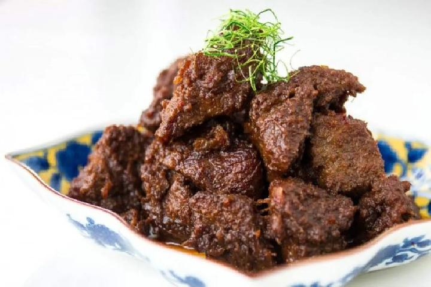

Rendang
Rendang: Slow-Cooked Indonesian Beef Stew with Rich Spices and Coconut
Rendang is a traditional Indonesian dish renowned for its rich flavors and tender, slow-cooked texture. The recipe begins with high-quality beef, which is simmered for hours in a fragrant mixture of coconut milk, lemongrass, garlic, shallots, ginger, and a medley of warm spices like turmeric, cinnamon, and cloves. The slow cooking process allows the flavors to meld beautifully while the liquid reduces, transforming the dish into a thick, caramelized sauce that coats the meat in a savory glaze.
The key to authentic rendang lies in patience and attention to detail. The cooking process involves stirring regularly to ensure the spices are evenly distributed, preventing the dish from sticking or burning. Traditionally served during festive occasions, rendang pairs perfectly with steamed rice, balancing its bold, complex flavors. With its deep cultural roots and unforgettable taste, rendang is a true testament to the richness of Indonesian cuisine.
Ingredients
- 500 grams beef (preferably chuck or brisket, cut into cubes)
- 400 ml coconut milk
- 5 shallots (finely chopped)
- 4 garlic cloves (minced)
- 2 cm fresh ginger (grated)
- 2 cm galangal (optional but authentic, grated)
- 2 stalks lemongrass (bruised)
- 3 kaffir lime leaves
- 1 teaspoon turmeric powder
- 1 teaspoon coriander powder
- ½ teaspoon cumin powder
- 1 small cinnamon stick
- 3 cloves
- 1 star anise
- 4 red chilies (adjust to taste, finely chopped)
- 1 teaspoon tamarind paste
- 1 tablespoon palm sugar or brown sugar
- 1 teaspoon salt (or to taste)
- 2 tablespoons vegetable oil for sautéing
Steps
- Prepare the ingredients by chopping the shallots, mincing the garlic, grating the ginger and galangal, bruising the lemongrass, and finely chopping the chilies.
- Heat the vegetable oil in a large pan over medium heat, then sauté the shallots, garlic, ginger, and galangal until fragrant.
- Add the lemongrass, kaffir lime leaves, turmeric powder, coriander powder, cumin powder, cinnamon stick, cloves, and star anise. Stir well to combine the spices.
- Add the beef cubes to the pan and cook until lightly browned on all sides.
- Pour in the coconut milk and add the tamarind paste, palm sugar, and salt. Stir to mix all ingredients thoroughly.
- Bring the mixture to a gentle boil, then reduce the heat to low and let it simmer uncovered. Stir occasionally to prevent sticking.
- Allow the dish to cook for 2-3 hours, stirring occasionally, until the liquid has reduced and thickened into a rich sauce, and the beef is tender.
- Taste and adjust the seasoning with more salt or sugar if needed.
- Once the beef is tender and the sauce has caramelized to a thick consistency, remove from heat and serve hot with steamed rice.